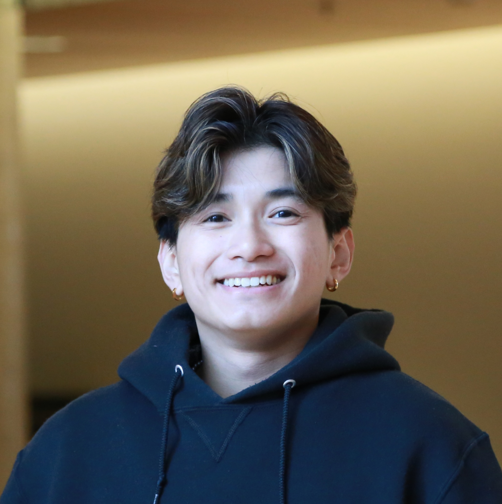

About
Hi! I'm Yuriel, and I am fascinated by the intersection of theoretical physics and creating tangible engineering solutions. As an Engineering Physics student at UBC, I am mastering the integration of mechanical, electrical and software design to solve interdisciplinary engineering challenges.
Education

Engineering Physics at UBC is an interdisciplinary program that combines advanced physics, mathematics, and engineering. My coursework covers a wide range of topics including classical and quantum mechanics, thermodynamics, electronics, control systems, computer programming, and applied mathematics. I am taking classes such as circuit analysis, solid mechanics, fluid dynamics, differential equations, and engineering design, which prepare me to solve complex real-world problems at the intersection of science and technology.
Skills
Electrical/Software
Mechanical
Solidworks

Information Technology
Projects
Engineering Physics Design Competition
ENPH 253 Design Competition | May 2025 – Aug 2025
Fully autonomous robot, capable of line-following, servo-actuated arm movement, Hall-effect sensing, and LIDAR sensing

Servo-actuated claw mechanism demonstrating the robot's ability to grasp and retrieve objects during autonomous operation.

Competing in our robot competition with my autonomous robot after six weeks of full-time work developing the system.

Autonomous line-following capability demonstrating the robot's navigation system in action.

Servo-actuated claw mechanism demonstrating the robot's ability to grasp and retrieve objects during autonomous operation.

Second iteration of servo-actuated claw, where I incorporated a four-bar linkage structure to maintain a constant claw-head position relative to the ground for easy gripping
What: Designing a fully autonomous robot to navigate a complex obstacle course and rescue magnet-tagged plush animals under time constraints and rule-driven limitations.
How:
- Lead the design and CAD modelling of the robot chassis, including motor mounting geometry, servo-actuated claw, and mechanical arm structure
- Prototype physical components using laser cutters and 3D printers
- Design and prototype compliant locomotion systems capable of clearing up to 4" debris and maintaining stability on inclined ramps
- Support the integration of circuit systems with mechanical components, ensuring coordinated movement through Hall-effect sensors and difference-based control logic
- Support the implementation of QRD sensor mounts to enable reliable line-following functionality across varying surface conditions
- Collaborate in a four-person team using version-controlled CAD (Onshape), budget component selection, and contribute to rapid prototyping under shifting competition constraints
Results:
- Achieved consistent autonomous navigation through all course zones including tight 12" doorways and obstacle-laden ramps
- Completed early design iterations enabling functional retrieval and scoring mechanisms within time constraints
- Developed robust subsystems adaptable to last-minute rule changes, supporting competitive performance for final qualification trials
RC Aircraft Vertical Stabilizer Design
UBC AeroDesign | Jan 2025 – Apr 2025
Detailed CAD model showing the vertical stabilizer structure with internal rib placement and material distribution for optimal weight and strength.
What:
- Iterate the vertical stabilizer for UBC AeroDesign's fixed-wing competition aircraft, with a focus on achieving optimal yaw stability, low structural weight, and efficient aerodynamic performance.
- Keep design within the constraints of the SAE AeroDesign 2025 ruleset and aircraft-level integration requirements, including limits on weight and size.
How:
- Created and iterated the vertical stabilizer geometry in SolidWorks, aligning the CAD model with fuselage and tail-boom mounting constraints
- Integrated lightening holes into internal rib structures to strategically reduce component mass while preserving strength and manufacturability
- Selected hybrid materials—balsa for internal volume and plywood for load-bearing areas—based on shear and bonding performance under expected aerodynamic forces
- Ensured seamless integration by designing precise alignment features and slot-tab geometries, including tight-fit indents optimized for CA glue bonding
- Maintained careful control over tolerances to balance ease of assembly with structural rigidity, reducing play and improving the accuracy of real-world construction
- Collaborated closely with rudder, horizontal stabilizer, and fuselage subteams to ensure structural compatibility and consistent aerodynamic alignment across the empennage
Results:
- Achieved a ~20% reduction in stabilizer mass compared to the initial baseline design while maintaining structural and aerodynamic targets
- Delivered a manufacture-ready CAD package, including laser-cut dxf profiles and design for reinforcement placement
- Final design passed all internal checks and was cleared for full-scale integration into the team's 2025 competition prototype
- Aircraft achieved 5th place in flight score
RC Aircraft Empennage Design
UBC AeroDesign | Sept 2024 – Dec 2024
Analysis on XFLR of Coefficient of Pressure, Coefficient of Moment, and Coefficient of Lift based on angle of attack; this was iterated through different Empennage Parameters.
Test flight of prototype aircraft designed with 18% static margin; empennage system tuned in XFLR5, verified through stable pitch behavior during climb and cruise.
What: Developing and tuning the full empennage system (horizontal stabilizer + tail boom) to ensure longitudinal static stability and effective pitch control under varied flight conditions.
How:
- Performed over 30 iterations adjusting horizontal stabilizer incidence angle and tail boom length, simulating effects on aircraft static margin using XFLR5
- Analyzed drag polar curves (Cl vs Cd) to evaluate aerodynamic efficiency and minimize stabilizer drag
- Interpreted Cm vs alpha, Cl vs alpha, and Cd vs alpha curves to validate negative pitching moment slope, stall characteristics, and trimmed flight behavior
- Modeled parametric CAD assemblies in SolidWorks for rapid iteration and ensured fuselage compatibility
- Cross-referenced simulation outputs with predicted CG envelope to ensure longitudinal trim across flight phases
Results:
- Achieved a final static margin of 18%, providing a well-balanced blend of stability and maneuverability
- Established a trimmed flight configuration aligned with design cruise conditions
- Created a fully simulated, structurally integrated empennage ready for production